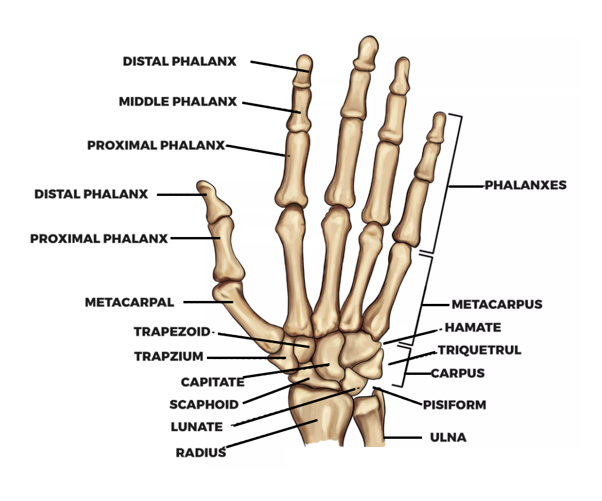
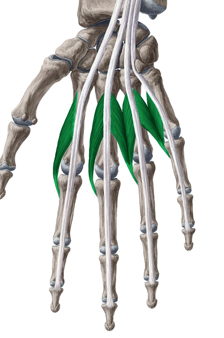
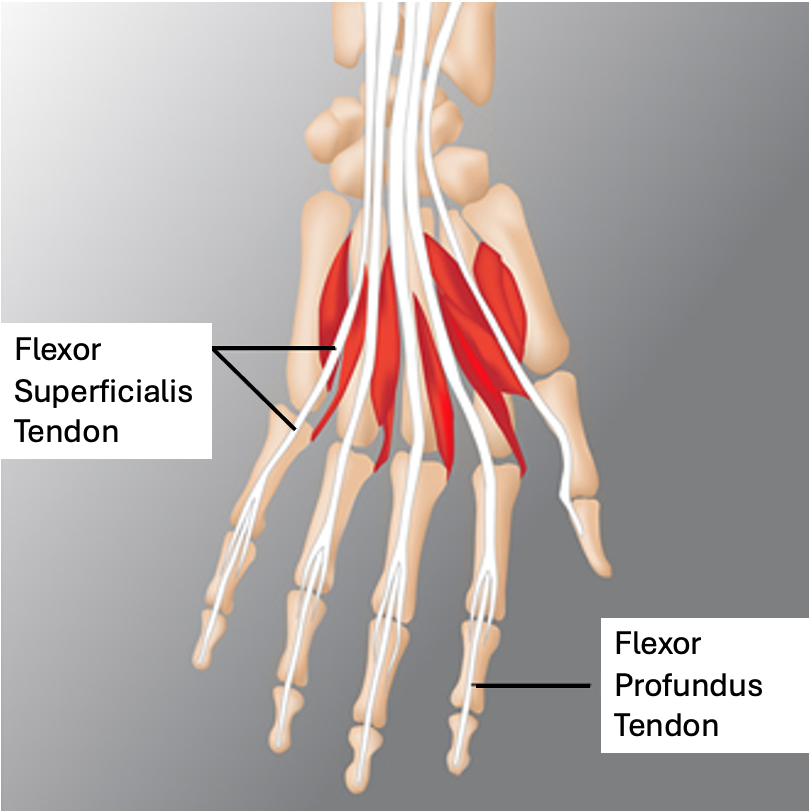
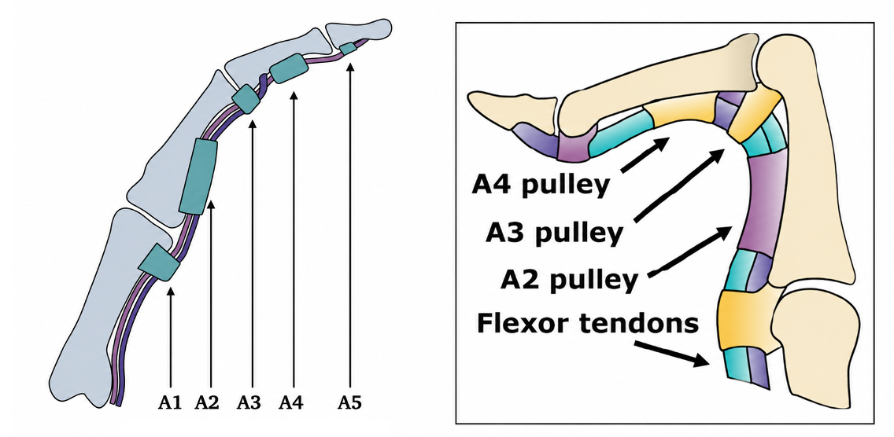

Module 01 · Lesson 04
Foundations of Human Anatomy & Physiology
How the fingers are built, how they bend, and how load actually travels through them when climbing.
Climbing places more demand on the fingers than almost any other sport. Yet very few coaches or athletes have a clear picture of what is actually happening inside a finger when it's loaded on a small edge. This lesson builds that picture — not at a medical or clinical level, but at the level a coach needs: enough to understand why certain grip positions and hold sizes carry more risk than others, and why training and injury management decisions are built on this anatomy in the first place.
The wrist is not a single joint but a complex of eight small bones called the carpal bones, arranged in two rows between the forearm and the hand. The proximal row (closer to the forearm) consists of the scaphoid, lunate, triquetrum, and pisiform. The distal row (closer to the fingers) consists of the trapezium, trapezoid, capitate, and hamate. These bones articulate with each other and with the radius and ulna of the forearm to allow the wrist to flex, extend, deviate side to side, and rotate in a limited arc.
For climbers, the most clinically relevant carpal bone is the scaphoid, which sits at the thumb side of the wrist and is vulnerable to injury in hard landings. The hamate, on the small-finger side, has a bony projection called the hook of the hamate that sits directly beneath the palm; this is a known stress site in climbers who load the pinky-side of the hand repeatedly in specific grip positions.
Another structure worth knowing is the triangular fibrocartilage complex (TFCC) — a disc of cartilage sitting on the small-finger side of the wrist, between the ulna and the carpal bones. It acts as a cushion and stabiliser for the wrist during load-bearing and rotational movements. In climbing, the TFCC is most commonly stressed during sidepull and undercling moves, and in any position where the wrist is loaded while twisted or deviated toward the small-finger side (ulnar deviation).
The way the wrist joint complex is constructed forms the carpal tunnel. The carpal tunnel acts as the wrist-level equivalent of a pulley system — a fibrous roof (the flexor retinaculum) holds the long flexor tendons close to the wrist as they pass through on their way to the fingers.
Wrist position during a grip directly affects the mechanical advantage of those tendons — a flexed wrist reduces grip strength significantly, which is why coaches cue a neutral or slightly extended wrist on the wall.
The thumb differs from the fingers in two important ways: it has only two phalanges (proximal and distal) rather than three, and its base joint — the carpometacarpal (CMC) joint — is a saddle joint rather than a hinge. This saddle shape gives the thumb its unique ability to move across the palm (opposition), which is essential for pinch grips, side-pulls, and underclings.
The joints of the thumb are:
Each finger — excluding the thumb — is built from three small bones called phalanges: the proximal phalanx (closest to the hand), the middle phalanx, and the distal phalanx (the fingertip bone). These are connected by two main hinge joints and attached to the hand at a third joint at their base, making three load-bearing joints per finger.
The amount each of these joints bends changes depending on grip type, and that difference matters. A tighter PIP bend (as in crimping) concentrates more force through the structures near the base of the finger — particularly the A2 pulley and the flexor digitorum superficialis tendon, which inserts on the middle phalanx. A deeper DIP curl (as in open-hand or drag positions) shifts more of the demand toward the fingertip end of the tendon system, loading the flexor digitorum profundus, which runs all the way to the distal phalanx, and the A4 pulley.
Coaches should think of grip type as a decision about where load gets concentrated, not simply a stronger or weaker hand position. Both crimping and open-hand positions carry injury risk — they just load different structures. Understanding which structures are under load in each grip type is essential for programming decisions, injury prevention conversations, and client education.

The bones of the hand and wrist
A common misconception is that finger strength comes from the hand itself. In fact, the primary muscles responsible for finger flexion — the flexor digitorum superficialis and flexor digitorum profundus — sit in the forearm, transmitting their force to the fingers via long tendons that run through the carpal tunnel. The wrist flexors and extensors are also forearm muscles, which is why forearm fatigue and pump are the dominant limiting factor in climbing endurance.
The hand does contain its own intrinsic muscles, but their role is largely one of stability and fine motor control rather than raw force production. The lumbricals, for example, assist in coordinating MCP flexion with IP extension — a subtle but important action in transitioning between grip positions. The interossei muscles spread and draw the fingers together, contributing to the precise finger placement climbers develop over years of practice.
The thenar muscles at the base of the thumb and the hypothenar muscles at the base of the small finger round out the intrinsic group, controlling thumb opposition and small-finger positioning respectively. Coaches should understand that training grip strength is fundamentally forearm training, while hand stability and precision develop through movement practice and accumulated volume on the wall.

The lumbrical muscles — intrinsic hand muscles coordinating MCP flexion with IP extension
A detail that surprises many climbers: there is no muscle tissue inside the fingers themselves. Every bit of finger-closing force is generated by muscles located in the forearm, and transmitted down into the fingers through long tendons.
Two tendons run down the front of each finger and are directly responsible for finger flexion:
Both tendons are under significant tension during almost any climbing grip, but the FDP in particular is subjected to very high force when hanging or pulling on small holds — which is exactly why finger and forearm training protocols are built around loading this tendon system progressively rather than all at once.

The flexor digitorum superficialis and profundus tendons
If the flexor tendons are the cables that pull the finger closed, the pulleys are the structures that keep those cables running close against the bone rather than lifting away from it. Pulleys are small, tough rings of connective tissue wrapped around the tendon at intervals down the finger.
Without a functioning pulley system, a tendon under load would lift away from the bone in a straight line between its two attachment points — a phenomenon referred to as bowstringing. Healthy pulleys prevent this by holding the tendon tight against the finger's natural curve.
Several pulleys run down each finger, but three are of particular relevance to climbers:

The annular pulley system, A1–A5
The reason the A2 pulley in particular takes the brunt of climbing injuries comes down to grip mechanics: a tightly flexed PIP joint (as seen in crimping) dramatically increases the angle — and therefore the force — the tendon exerts against the A2 pulley as it changes direction around the joint. This is a mechanical reality of the crimp position, not simply a matter of an individual climber's strength or technique being inadequate.
Coaching Takeaway
Understanding the pulley system explains why a full crimp grip carries meaningfully more structural risk than an open-hand grip on the same hold — the difference is not just about which grip 'feels stronger', but about how much force each grip routes through the A2 pulley specifically.
Putting the previous three sections together gives a coach a genuinely useful model: when a climber weights a hold, force does not simply arrive at the fingertip and stop there. It travels through a chain of structures, each of which experiences a different share of that load depending on grip position and hold size.
In simplified form, the chain runs: hold → fingertip (DIP) → middle joint (PIP) → A2 pulley → flexor tendon → forearm muscle.
A few practical translations follow directly from this chain:
This model is also exactly why sensible finger training progresses gradually. Tendons and pulleys adapt to load over time through slow structural changes such as increased collagen density, but that adaptation happens far more slowly than muscular strength gains. A climber can become stronger in their forearm muscles well before their pulleys and tendons have caught up — which is precisely the mismatch that leads to injury when hold size or intensity increases too quickly.
A climbing finger is a simple but genuinely high-stress structure: three bones, two major bending joints, two flexor tendons doing all of the pulling work, and a series of pulleys holding those tendons in place. Grip type and hold size directly determine how load is distributed across this system — and because the pulleys and tendons adapt to load far more slowly than muscle does, this anatomy is the foundation for every sensible decision a coach makes about grip progression, hold selection, and training load.